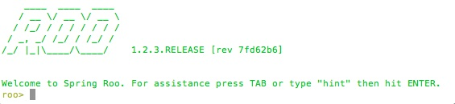
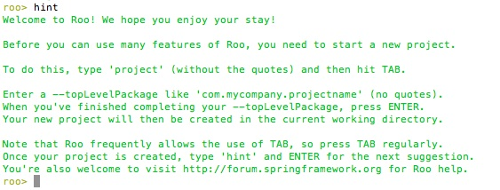
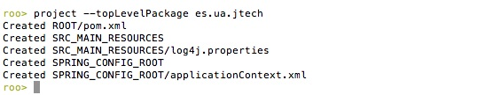
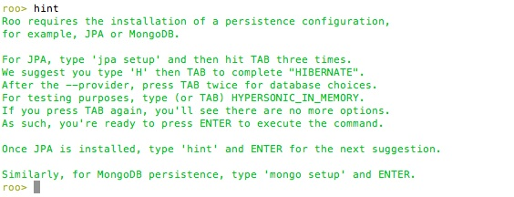
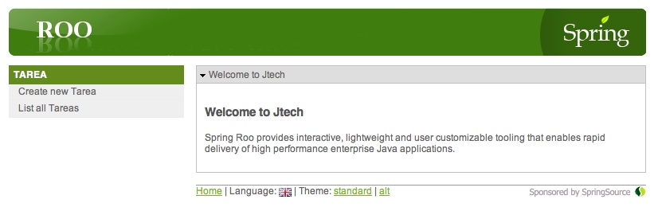
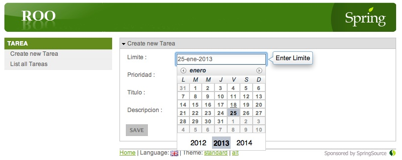
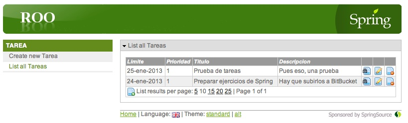
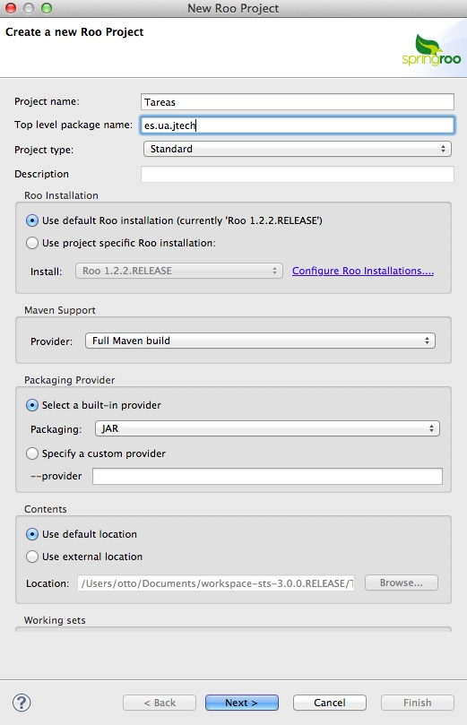
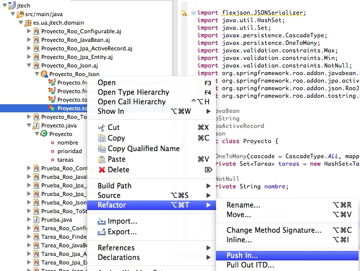

Desarrollo rápido de aplicaciones con Spring Roo
Introducción rápida a Spring Roo
¿Qué es Roo?
Aunque casi nadie niega que JavaEE sea una plataforma robusta, escalable y que incorpora multitud de funcionalidades, no brilla precisamente por su productividad. Y eso que se ha simplificado mucho con los años. En gran medida el problema procede del propio lenguaje de desarrollo: Java es un lenguaje estáticamente tipado e induce a un estilo de programación demasiado verboso.
Como alternativa, las plataformas de desarrollo rápido (RAD) de aplicaciones web, como Ruby on Rails o Django, suelen usar lenguajes de tipado dinámico o filosofías como la "convención por encima de la configuración" (convention over configuration) con el objetivo de hacer el desarrollo más rápido y ágil y el producto resultante más ligero y simple. En el mundo Java tenemos un representante de estas ideas en Groovy on Grails, inspirado en Rails y usando el lenguaje dinámico Groovy pero con la plataforma JavaEE por debajo (Grails tiene su propio módulo en este curso).
Spring Roo toma prestadas algunas de las ideas típicas de las plataformas al estilo Rails (la convención por encima de la configuración, el active record para la persistencia,...), pero conceptualmente está más cerca de las herramientas MDA y de las de generación de código. Es decir, básicamente Roo nos va a generar el esqueleto de una aplicación Spring completa, ahorrándonos el tedioso trabajo de tener que configurarlo todo manualmente y tener que escribir el típico código repetitivo, como por ejemplo las partes de CRUD en JPA o en la web.
Roo respeta los siguientes principios:
- Uso de tecnologías "estándar" (en el sentido de ampliamente conocidas y probadas): genera un proyecto Maven con código Spring, JPA y Tiles entre otros.
- No incorpora componentes en tiempo de ejecución. No hay lenguajes interpretados ni librerías adicionales.
- Separa físicamente el código generado de los archivos editables por el desarrollador, de modo que al modificar estos últimos no "rompamos" o trastoquemos la aplicación, que es un problema típico de las herramientas de generación de código. Como veremos, esto se consigue mediante el uso de AOP. Esto no significa que no haya que tener cuidado al editar el código. Luego veremos algunas directrices.
- Intenta evitar convertirse en una dependencia imprescindible: de modo que si en algún momento deseamos dejar de usarlo podamos refactorizar el código de manera sencilla y pasar a tener un código fuente sin dependencias de él.
Evidentemente, en desarrollo software no hay fórmulas mágicas, así que Roo no puede resolver todos nuestros problemas ni escribir automáticamente una aplicación no trivial (pero quizá pueda darnos un 80% del código hecho para concentrarnos en el 20% realmente interesante). Por otro lado, y como ya hemos dicho, al ser una herramienta que genera código hay que llevar cierto cuidado con los cambios que hacemos para evitar que la aplicación se "rompa".
Arquitectura de las aplicaciones Roo
Habitualmente las aplicaciones web JavaEE se estructuran en tres capas: la capa web, la de negocio y la de acceso a datos. En la de negocio suele haber una "sub-capa" de servicios (Business Objects) que ofrecen eso, servicios, a la capa web o a clientes remotos (REST y otros). Además aquí se suele considerar que está el modelo del dominio. Finalmente, en la capa de acceso a datos habitualmente tenemos los DAOs, que se encargan de la persistencia.
La arquitectura de las aplicaciones generadas por Roo por defecto es mucho más simple que la que acabamos de describir. Básicamente tiene dos capas: la web y la de entidades o modelo del dominio. Las entidades se convierten en una especie de "superentidades" que se encargan no solo de modelar el dominio sino también de tareas como su propia persistencia, la validación de sus datos e incluso su serialización a JSON. Esta idea de que los propios objetos del dominio se encarguen de su persistencia no es exclusiva de Roo, en realidad es muy típica de plataformas RAD como Rails, Django, Grails y otras, y se conoce habitualmente como Active Record.
En ciertos casos nos interesará tener en la aplicación servicios y/o DAOs. Aunque no los use por defecto, Roo también puede generarlos si se lo pedimos. No obstante, en estos apuntes nos concentraremos en el modelo más simple de dos capas.
Roo en diez minutos o menos
Desde el punto de vista de su uso, Roo está diseñado como un shell interactivo al estilo de Rails o de Grails. Para facilitar su uso tiene autocompletado de los comandos y ayuda contextual. Además en todo momento nos mostrará solo los comandos que sean válidos y nos dará pistas de cuál es la siguiente tarea a realizar si estamos un poco perdidos.
Vamos a ver aquí cómo se interactúa con Roo a nivel básico, teclearemos comandos sin explicar en mucho detalle qué hace cada uno, en eso ya entraremos en los siguientes apartados.
Crearemos la típica aplicación de gestión de tareas pendientes. Para comenzar, lo primero es crear un directorio para el proyecto:
mkdir tareas cd tareas
Y ahora ya podemos arrancar el shell de Roo. El script en sistemas Unix se llama roo.sh (roo.bat en Windows). Aparecerá la siguiente pantalla:

El propio shell nos sugiere que pulsemos TAB para autocompletar comandos. Si lo hacemos, aparecerá una lista con los comandos disponibles, que no son todos los de Roo, sino solo los que tiene sentido usar en este momento. Además, el shell nos indica que si tecleamos el comando hint, nos "dará una pista" de qué hacer a continuación:

Como vemos, lo primero que debemos hacer es crear la estructura del proyecto con el comando project. Para ahorrarnos tecleos innecesarios podemos emplear TAB para autocompletar, de modo que si tecleamos proj-TAB-TAB el resultado será:
project --topLevelPackage
Ahora tecleamos un nombre para el "dominio" base del proyecto, por ejemplo es.ua.jtech. Roo creará la estructura básica necesaria para comenzar a trabajar con nuestro proyecto:

Podemos ver que se ha creado el pom.xml de Maven y un fichero XML de configuración de beans de Spring. Ahora, si no sabemos qué hacer, podemos teclear de nuevo 'hint':

Y vemos que Roo nos sugiere empezar a trabajar con la capa de persistencia de nuestra aplicación. Lo primero de todo es seleccionar lo que Roo llama un "proveedor de persistencia", es decir, una tecnología de persistencia de entre las que soporta Roo. Por defecto lo más habitual en Roo es usar JPA, aunque también viene preparado para bases de datos NoSQL como MongoDB.
Vamos entonces a configurar la capa de persistencia. Usaremos JPA con la implementación de Hibernate y como base de datos emplearemos hsqldb en memoria, para no depender de ningún servidor de base de datos externo.
roo> jpa setup --provider HIBERNATE --database HYPERSONIC_IN_MEMORY
El siguiente paso es crear las entidades del modelo del dominio. Crearemos una clase Tarea y luego le iremos añadiendo campos: titulo, fecha límite y prioridad. Ponemos todos los comandos seguidos, obviando la información que Roo nos da entre comando y comando de todos los archivos que va creando para dar soporte a la aplicación.
roo> entity jpa --class es.ua.jtech.domain.Tarea ~.domain.Tarea roo> field string --fieldName titulo ~.domain.Tarea roo> field date --fieldName limite --type java.util.Date ~.domain.Tarea roo> field number --type int --fieldName prioridad
Con todo esto hemos creado una entidad que automáticamente incorpora métodos de persitencia CRUD y algunos métodos de búsqueda básicos (buscar tareas por identificador - Roo crea una automáticamente, al no haberlo hecho nosotros -), Nótese que tras crear la entidad Tarea, el prompt de Roo cambia indicando que el foco de las siguientes operaciones está fijado en ella, es decir, que los campos se van a crear por defecto en esa entidad. Roo abrevia el nombre del paquete de nivel superior de la aplicación (en nuestro ejemplo es.ua.jtech) con el símbolo de la tilde, ~. Podemos usar ese símbolo en nuestros comandos en lugar de teclear el nombre completo del paquete, aunque por desgracia no es una abreviatura muy práctica para el teclado en castellano. Para cambiar el foco a otra entidad podemos usar el comando focus --class nombre_de_la_clase_cualificado
Por otro lado, aunque aquí estamos creando los campos de la clase con comandos de Roo podríamos hacerlo también editando directamente el archivo Tarea.java, como haríamos si no estuviéramos usando Roo. Si abrimos este archivo, veremos que tiene un aspecto como el siguiente (obviando los imports):
@RooJavaBean
@RooToString
@RooJpaActiveRecord
public class Tarea {
@Temporal(TemporalType.TIMESTAMP)
@DateTimeFormat(style = "M-")
private Date limite;
private int prioridad;
private String titulo;
}
Vemos que es código estándar con algunas anotaciones de Roo. Pero a poco que lo examinemos, es un poco sorprendente: ¿dónde están los getters y setters? ¿y el supuesto código CRUD que se había autogenerado? ¿no será un engaño todo esto de Roo ;)?. La respuesta es que para no interferir con los archivos que nosotros podemos modificar, Roo coloca todo este código generado en archivos aparte. El mecanismo que se usa es bastante ingenioso: estos archivos son lo que se denominan Inter-Type Declarations (ITD) de AspectJ, y son los ficheros con extensión .aj que Roo ha ido creando y actualizando tras cada uno de los comandos que hemos ejecutado sobre nuestra entidad. Por ejemplo el Tarea_Roo_JavaBean.aj contiene los getters y setters, el Tarea_Roo_Jpa_ActiveRecord.aj contiene el código de persistencia, ... En tiempo de compilación, el compilador de AspectJ "mezcla" (weaves, en argot AOP) este código generado con el código escrito por nosotros, produciendo ficheros .class convencionales con una combinación de nuestro código y el generado automáticamente.
Roo es lo suficientemente "inteligente" como para detectar en tiempo real los cambios que hacemos a nuestros .java y actuar en consecuencia. Por ejemplo si añadimos un campo para la descripción de la tarea
private String descripcion;
Al actualizar el archivo .java, y si seguimos teniendo abierto el shell de Roo, este detectará el cambio y actualizará los ITD pertinentes para incluir el nuevo campo.
Para terminar nuestra aplicación, vamos a añadirle una capa web y a generar automáticamente la parte CRUD de la web. A esto último, en el ámbito de las herramientas web de desarrollo rápido, se le suele denominar scaffolding.
roo> web mvc setup roo> web mvc all --package es.ua.jtech.web
Finalmente, con el comando quit nos salimos del shell de roo y podemos proceder a desplegar nuestra aplicación. Al ser un proyecto web Maven, podemos desplegarla y ejecutarla automáticamente por ejemplo en el contenedor web Jetty con:
$ mvn jetty:run
Si es la primera vez que usamos Jetty desde Maven tardará un rato en bajarse las dependencias, pero el proceso es automático. Una vez aparezca en la consola el mensaje "Started Jetty Server", el servidor está listo, y podemos acceder a la aplicación abriendo la URL http://localhost:8080/jtech desde un navegador. Veremos el interfaz web generado por Roo, en el que podemos realizar las típicas operaciones CRUD.



Trabajar con Roo desde SpringSource Tool Suite
Como no podía ser de otro modo, STS, el IDE de SpringSource, está preparado para trabajar con Roo. Entre los distintos tipos de proyectos que podemos crear está el "Spring Roo Project". El cuadro de diálogo para introducir los datos tiene muchas opciones pero podemos dejar la mayoría con los valores por defecto. Por ejemplo, para darle las mismas propiedades que el proyecto que hemos creado desde el shell de Roo, haríamos:

Una vez creado el esqueleto del proyecto, aparecerá una ventana de Eclipse con un shell de Roo, que es el mismo que hemos usado antes desde fuera de STS. La diferencia más aparente es que ya se está ejecutando por defecto en el directorio del proyecto y además que desde STS para autocompletar no se usa TAB sino Ctrl-Espacio, al estilo Eclipse. De hecho el propio shell de Roo lo detecta y cambia el mensaje en pantalla para indicarlo.
Por defecto STS oculta los ITD con extensión .aj. Para verlos, en la ventana del Package Explorer hacemos clic sobre la pequeña flecha apuntando hacia abajo de la esquina superior derecha, seleccionamos Filters... y desmarcamos la opción de "Hide generated Spring ROO ITDs".
El desarrollo en Roo usando STS también se basa en comandos que hay que teclear en la terminal, con la comodidad adicional que nos ofrece el IDE al escribir código o ejecutar la aplicación (al crear Roo una aplicación web estándar, podemos ejecutarla desde STS con Run As tras añadirle la capa web). Además STS nos ofrece algunas funcionalidades adicionales, por ejemplo para refactorizar código, como veremos posteriormente.
Reglas generales sobre cómo editar código en una aplicación Roo
Al ser Roo una herramienta de generación de código, hay que llevar cuidado al modificar manualmente nuestro proyecto porque podemos eliminar o cambiar algo vital para Roo y "romper" el código. En la práctica, como todo el código generado por Roo está en los .aj esto no va a pasar con tanta facilidad como con otras herramientas de generación de código. Vamos a dar unas directrices generales de qué editar y cómo y qué no:
- No se deben modificar/eliminar los archivos .aj ya que es Roo el que los gestiona y modifica automáticamente.
- Se puede modificar código de los .java generados por Roo. Ya que Roo vigilará los cambios y modificará los .aj para que los reflejen. Como iremos viendo, algunos comandos de Roo lo único que hacen en realidad es introducir ciertas anotaciones propias del framework en el código Java. Estas anotaciones, de hecho, son las que hacen que Roo genere y actualice los .aj. De modo que también podemos introducirlas a mano en lugar de hacerlo mediante los comandos del shell de Roo. Evidentemente, esto quiere decir que si las eliminamos o modificamos inadvertidamente, la "magia" de Roo podría dejar de funcionar.
- En general también se pueden editar los artefactos estándar, por ejemplo el pom.xml para añadir dependencias o plugins, eso sí, llevando cuidado de no eliminar nada que haya introducido Roo.
La capa de acceso a datos
Vamos a ver en este apartado de manera un poco más detallada qué puede hacer Roo por nosotros al crear las entidades del dominio de nuestra aplicación. Como ya hemos visto en la introducción rápida este es el primer paso que se hace tras la creación de un proyecto.
Vimos que el primer paso era especificar qué proveedor de persistencia y qué base de datos íbamos a usar, con el comando jpa setup. En cualquier momento podemos cambiar la configuración de la base de datos y del proveedor de persistencia las veces que deseemos ejecutando de nuevo jpa setup. Así, en las primeras versiones de la aplicación podemos usar una base de datos hsqldb en memoria, como hicimos en el ejemplo de la aplicación de tareas, y luego cambiar a otra base de datos como MySQL u Oracle. En este último caso, lo normal será que tengamos que editar manualmente las propiedades de conexión con la base de datos, que Roo almacena en el archivo src/main/resources/META-INF/spring/database.properties. También se pueden mostrar/editar dichas propiedades desde el shell de Roo con el comando properties.
Active Record
Antes hemos comentado que Roo implementa el patrón de diseño Active Record, dando automáticamente a las entidades funcionalidad CRUD. Esta funcionalidad se implementa físicamente en el .aj cuyo nombre comienza con el de la entidad y acaba en ActiveRecord. El API es bastante sencillo, consistiendo en un conjunto de métodos muy similares a los de JPA. Por ejemplo:
//Create
Tarea t = new Tarea();
t.setLimite(new Date());
t.setPrioridad(1);
t.setTitulo("Probando");
t.persist();
//Read
for (Tarea t_i : Tarea.findAllTareas()) {
System.out.println(t_i.getTitulo());
}
//Update
Tarea t2 = Tarea.findTarea(1L);
t2.setPrioridad(1);
t2.merge();
//Delete
Tarea t3 = Tarea.findTarea(2L);
t3.remove();
Como se ve, los métodos de este API son los mismos que los de JPA, pero los implementa la propia clase de la entidad. El find de JPA se implementa como un método estático y se añade un findAll, un método de conveniencia para obtener todas las entidades sin necesidad de crear una query, también estático.
En active record, los métodos que sirven para buscar entidades especificando determinadas condiciones se denominan genéricamente finders. Además del find y del findAll, Roo puede generar por nosotros el código de muchos otros finders sin necesidad de escribir manualmente la query JPA-QL. Los finders codifican la query en el nombre del método según una serie de convenciones, que nos permiten buscar por un campo o por varios (findXXXByYYY, findXXXByYYYAndZZZ), o buscar aquellas entidades en las que un campo cumpla o no determinada condición (findXXXByYYYNotEquals,...). Algunos ejemplos concretos:
findTareasByTituloEquals(String titulo) findTareasByTituloNotEquals(String titulo) findTareasByTituloLike(String titulo) findTareasByPrioridad(int prioridad) findTareasByLimiteLessThan(Date limite) findTareasByLimiteBetween(Date minLimite, Date maxLimite)
Para saber exactamente qué finders puede implementar Roo por nosotros, podemos usar el comando finder list, teniendo el foco en la entidad que nos interesa, lo que nos imprimirá en el shell una lista con todos los finder posibles para esta entidad. Ahora, para generar uno de ellos usamos el comando finder add --finderName seguido del nombre del finder a generar. Por ejemplo:
~.domain.Tarea roo> finder add --finderName findTareasByPrioridad
Como ya hemos dicho, podemos generar finders que combinen dos o más campos (en el nombre aparecerán unidos por And u Or,por ejemplo findTareasByPrioridadAndLimiteLessThan). Para listarlos, podemos añadir el parámetro --depth indicando cuántos campos queremos combinar. ¡Cuidado, fácilmente se producirá una explosión combinatoria en el número de finders posibles!.
Validación
Vamos a probar cosas un poco más sofisticadas que las que hicimos en la introducción "en diez minutos". Continuando con el ejemplo de las tareas, vamos a suponer ahora que tenemos proyectos y que cada proyecto está compuesto de una o varias tareas. Vamos a crear la entidad Proyecto con los campos título y prioridad. En el siguiente apartado nos ocuparemos de la relación uno a muchos entre proyecto y tareas. Por ahora vamos a decirle a Roo que queremos validar los campos título y prioridad: el título no puede estar vacío y la prioridad debe ser un entero de 1 a 3. La creación de la entidad la hacemos con los comandos:
roo> entity jpa --class es.ua.jtech.domain.Proyecto ~.domain.Proyecto roo> field string --fieldName nombre --notNull ~.domain.Proyecto roo> field number --fieldName prioridad --type int --min 1 --max 3
Lo que hace Roo es introducir anotaciones de JSR303 para validar los campos. También podríamos haber creado los campos e introducido las anotaciones manualmente en el código. Para más información sobre los distintos parámetros para la validación, consultar la referencia de Roo.
Pruebas
Para probar el código de persistencia y validación, podemos decirle a Roo que genere automáticamente un conjunto de tests. Dicho conjunto lo podemos generar con el comando test integration:
roo> test integration --entity es.ua.jtech.domain.Proyecto
También podíamos haber creado los test en el momento de crear la entidad con el comando entity añadiendo al final el switch --testAutomatically.
Una vez creados los test, veremos que se ha generado, entre otros, una clase de prueba ProyectoIntegrationTest en src/test/java que como no podía ser menos en Roo, no contiene en apariencia ningún test (solo uno que está vacío). En realidad los test de integración están en un .aj, y prueban todas las funcionalidades CRUD que Roo le proporciona a la entidad. Como el .aj se "mezcla" con el .java al compilarse, los test CRUD se ejecutarán automáticamente con Maven o bien podemos ejecutarlos manualmente con botón derecho y Run As > JUnit Test.
Por supuesto, podemos incluir nuestros propios test. Con el objeto de facilitarnos su implementación, Roo nos genera junto a los tests de CRUD una clase denominada XXXDataOnDemand, donde XXX es el nombre de la entidad. Esta clase nos proporciona bajo demanda nuevas instancias de la entidad con valores aleatorios, asegurándose de que cumplan las restricciones de validación.
@Test
public void testDeEjemplo() {
ProyectoDataOnDemand pdod = new ProyectoDataOnDemand();
Proyecto p = pdod.getNewTransientProyecto(1);
p.persist();
Proyecto p2 = Proyecto.findProyecto(p.getId());
assertEquals(p.toString(),p2.toString());
}
Relaciones entre entidades
Por supuesto, tan importante como gestionar las entidades es gestionar las relaciones entre ellas. Al crear los campos, si especificamos que representan una relación con otra entidad introducirá las anotaciones JPA pertinentes. Como siempre, también podríamos escribir manualmente el código.
Vamos a modelar una relación uno a muchos entre proyecto y tareas. En el proyecto Añadiremos un campo "tareas" que referencie las tareas dentro de él. En Roo este tipo de campo se define como "set" (en Java será un Set<Tarea>). Por defecto se supone cardinalidad muchos a muchos, salvo que lo especifiquemos. Para el campo del lado "muchos a uno" se usa el tipo "reference".
roo> focus --class es.ua.jtech.domain.Proyecto
~.domain.Proyecto roo> field set --fieldName tareas --type Tarea
--cardinality ONE_TO_MANY --mappedBy proyecto
~.domain.Proyecto roo> focus --class es.ua.jtech.domain.Tarea
~.domain.Tarea roo> field reference --fieldName proyecto --type Proyecto
--cardinality MANY_TO_ONE
Como es de suponer, el --mappedBy representa el atributo del mismo nombre de la anotación @OneToMany
La capa web
Roo puede generar el código de la capa web para diferentes frameworks. El usado por defecto es Spring MVC, que es el que vamos a ver aquí, pero también podemos emplear JSF, GWT u otros menos conocidos como Vaadin.
Lo primero es crear toda la configuración y los artefactos necesarios para la capa web. Entre otras cosas, si el proyecto era hasta ahora de tipo JAR, Roo cambiará la configuración a .WAR, creará el descriptor de despliegue web.xml, introducirá las nuevas dependencias en el pom.xml, creará el fichero de configuración de beans para la capa web... todo esto se consigue con el comando
roo> web mvc setup
Scaffolding
El scaffolding es una funcionalidad muy habitual en las herramientas de desarrollo rápido para web y consiste en que la herramienta nos va a generar todo lo necesario para un interfaz web CRUD de las entidades, desde las páginas JSP y el CSS hasta los controllers (en Spring MVC, en otros frameworks generará los artefactos equivalentes). Podemos decirle a Roo que queremos scaffolding para todas las entidades con
roo> web mvc all --package es.ua.jtech.web
Con --package estamos especificando el paquete donde queremos que Roo genere el código de los controllers. Por cada entidad se va a generar un controlador con métodos CRUD, accesibles mediante URLs al estilo REST. Así, por ejemplo, haciendo una petición GET a la URL /tareas/ obtendríamos una lista de tareas, mientras que haciendo una petición POST a la misma URL crearíamos una tarea nueva, pasando los datos como parámetros HTTP. Todos estos métodos se implementan en el archivo XXXController_Roo_Controller.aj, donde XXX es el nombre de la entidad. Se recomienda consultar la documentación de Spring Roo para más información sobre los métodos generados.
Existe la posibilidad de hacer el scaffolding solo para una determinada entidad, con el comando web mvc scaffold. Primero tenemos que poner el foco en la entidad:
roo> focus es.ua.jtech.domain.Proyecto ~.domain.Proyecto roo> web mvc scaffold --class es.ua.jtech.web.ProyectoController
Si no quisiéramos generar algún método CRUD podemos especificarlo con el parámetro --disallowedOperations y una lista de las operaciones separadas por comas (de entre 'create', 'update' o 'delete', por ejemplo --disallowedOperations update,delete. También podemos modificar la anotación @RooWebScaffold que Roo coloca en la clase controller, añadiendo como atributo nombre_operacion=false, por ejemplo:
@RooWebScaffold(path = "proyecto", formBackingObject = Proyecto.class,
update = false, delete = false)
@RequestMapping("/proyectos")
@Controller
public class ProyectoController {}
El scaffolding es útil, pero hay muchos casos en los que queremos implementar operaciones distintas del simple CRUD. Para no tener que empezar a implementar el controlador desde cero, Roo nos ofrece la posibilidad de generar solo el esqueleto del controlador, con el comando "web mvc controller". Esto no solo genera el código (casi vacío) del controlador. Además, crea una página JSP asociada e incluye un enlace al controlador en el menú principal.
Clientes REST
Podemos serializar automáticamente las entidades en JSON, lo que nos será útil para los clientes REST. Para ello usaremos la secuencia de comandos:
roo> json all #da soporte JSON a todas las entidades roo> web json setup #solo necesario si no hemos hecho ya web mvc setup roo> web mvc json all #genera los controllers CRUD para json
El soporte para la serialización JSON lo ofrece la librería open source flexjson, por lo que para averiguar cómo se configura el JSON generado tendremos que acudir a su documentación.
Al igual que con otros comandos, lo que hacen los de json básicamente es incluir un par de anotaciones en las ciertas clases. Estas anotaciones le indican a Roo que debe crear o introducir ciertas funcionalidades en los ITD automáticamente. En concreto, "json all" lo que hace es anotar todas las entidades con @RooJson, y "web mvc json all" anota los controladores con @RooWebJson
Finders en la web
Podemos dar acceso en la capa web a los finders que hayamos creado en las entidades. Automáticamente Roo incluirá un método en el controlador para llamar al finder, lo mapeará con una URL determinada e incluso creará un formulario web para introducir los datos y un enlace en la página principal de la aplicación. El comando para dar acceso a todos los finders es "web mvc finder all", que introduce en los controladores la anotación @RooWebFinder.
Refactorización del código Roo
En muchos casos, nos servirá aproximadamente el código generado por Roo pero querremos modificarlo para que se adapte a nuestras necesidades. Por ejemplo, al serializar los objetos en JSON, las relaciones uno a muchos no se serializan por defecto. Para cambiarlo tendríamos que cambiar código en un .aj. Pero ya hemos dicho que los .aj no se deberían editar, ya que Roo los gestiona y actualiza automáticamente y podría deshacer nuestros cambios de buenas a primeras. La solución es refactorizar el código para llevarnos el método que nos interese desde el .aj hasta el correspondiente .java. A esto se le denomina push-in refactoring.
El push-in refactoring está implementado en el IDE STS. Desde el package explorer seleccionamos el .aj del que nos interesa extraer el método, desplegamos sus métodos y pulsamos sobre el método objetivo con el botón derecho. Para refactorizar seleccionamos Refactor > Push In. Luego modificaríamos manualmente el código, ya en el .java, con la seguridad de que Roo no va a "meter las narices" en los cambios que hagamos.

En el ejemplo que habíamos comentado, para serializar en JSON todas las tareas de un proyecto, haríamos un push-in del método toJson() del Proyecto_Roo_Json.aj. El código acabaría en Proyecto.java donde podríamos modificarlo, con la ayuda de la documentación de FlexJSON, para que se incluya el campo "tareas" en la serialización:
public String toJson() {
return new JSONSerializer().include("tareas").serialize(this);
}
Aunque es de uso mucho menos habitual, la refactorización contraria al "push in" es "pull out" y consiste en que trasladamos código de una clase Java a un .aj. También está implementada en STS.
Eliminar Roo de nuestro proyecto se podría ver como "el push-in definitivo", o sea, trasladar el código de todos los .aj a las clases Java correspondientes. Además, eliminaríamos las anotaciones y algunas dependencias ya innecesarias del pom.xml. Seguiríamos estos pasos:
- Hacer el push-in de todos los .aj: en STS seleccionaríamos el proyecto y con el botón derecho, como antes, Refactor > Push In
- Eliminar todas las anotaciones de Roo: es relativamente sencillo, ya que todas comienzan por @Roo.
- Finalmente, eliminamos la dependencia de <artifactId>org.springframework.roo.annotations</artifactId> del pom.xml